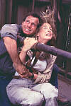

Contents | Features | Reviews | Books | Archives | Store |
 |
|
| Movie Credits | Buy It! |
Twister
Review by Carrie Gorringe
 |
Directed by Jan De Bont. Starring Helen Hunt, Bill Paxton, Screenplay by Michael Crichton |
To understand some of the more serious strains that Twister places upon the audience's credulity, a quick-and-dirty overview of tornado characteristics is in order. Tornadoes, or, more precisely, a cumulonimbus cloud (a so-called "funnel" cloud) occur when extremely cool air from the sky encounters extremely warm air on the ground. Most unfortunate are the denizens of the American mid-west and south, because the spring weather patterns in these areas are highly favorable to such cloud formations. The result is a rather nimble and nasty nimbus that leaves a mile-wide path of devastation in its wake. Tornadoes are, to use a somewhat false analogy, like hurricanes on land, but pack far more force. The strongest hurricane has been estimated to have wind speeds of 250 miles per hour; the wind speed of an F-5, the highest measurement designation for a tornado, starts at a mere 375 miles per hour, and some F-5s are estimated to have topped out at 500 miles per hour. As if to add insult to injury, there is no method available for accurately predicting when tornadoes will form, because they do so rather rapidly, and can change direction just as fast; meteorologists can do no more than provide a two-minute warning to those under threat.
It is this obsession with widening the gap between detection and protection that is the "eye", if you will, of Twister's storyline. Scientist Jo Harding (Hunt) and her motley collection of tornado chasers (imagine a meteorological equivalent of the worst stereotypes applied to computer nerds) are racing against several key plot elements, time being the most important. For one, they are attempting to plant some sensors in a funnel in the hope of obtaining vital scientific data (what else?) that will put them ahead of the competition. Second, there is the competition, an erstwhile member of Harding's group named Dr. Jonas Miller (Elwes), an individual who has a surfeit of vanity and corporate sponsorship (right down to the requisite fleet of black vans that carry the traditional metaphoric punch), but seemingly very little intelligence for a holder of a Ph.D. And then there is Jo's impending divorce from Bill Harding (Paxton), the papers for which she just keeps forgetting to sign. Bill, on the other hand, is indecently impatient for Jo to sign her life away, as he intends to marry Melissa (Gertz) a mousy, whining psychotherapist who gives every impression of needing a little extra time on the couch herself. Despite all these messy personal details, Jo is so excited about her collection of devices for implanting sensors, each one named "Dorothy" (anyone for a chorus of "Follow the Yellow Brick Road"?), and its possibilities, that Bill is sucked right back into the thrill of the chase. Soon, the crew is bounding along like an overzealous puppy chasing a large truck, and as oblivious to the danger. The journey should be entertaining. After all, there's a neurotic shrink fiancée in tow, and no shortage of funnel-shaped possibilities on the horizon.
I said that the journey should be entertaining. Unfortunately, such is not the case. The shortages in Twister lie under the special effects. The dialogue and plot are, appropriately enough, paper-thin, as might be expected from a product hammered together via last-minute script-doctoring (by the uncredited Steven Zaillian, of Schindler's List, and Joss Whedon, who did an uncredited rewrite for De Bont's Speed). True, it is absurd to expect that interpersonal skills can be exercised among characters with dialogue which basically consists of minimal variations on the theme of "Watch out for that combine!" or "Get out of the way!" (always good advice when dealing with a tornado). It's even more absurd to pretend that anyone in the audience really believes that the marriage of Jo and Bill is really in peril. But abandoning all of the pretenses of concerns about the character's personal lives means descending to a level of cynicism about the narrative that borders on the appalling. Why care about the means of getting to the end when everyone knows how it's going to end? Because such concerns make for a better film; giving the audience something to mull over in between the scenes when various farmyard animals unwillingly take flight; in short, such concerns give the audience a psychological stake in what's happening, making the process of getting there as fun as having a rough idea of what the end is going to contain. They might also have helped the filmmakers to better link the constraints of physical actuality with the boundless potential of special effects; without giving too much away, the final sequence in this film suffers from the same disease that has infected far too many action-adventure films this summer: a zeal for the implausible, if exciting, special effect destroyed by the ugliness of the laws of physics -- the laws of probability notwithstanding, since they never really figure very highly under these circumstances.
However, it seems that the filmmakers of Twister, having dropped one ball, decided to see what the effect would be if they dropped the other as well. There is one word to describe the overall quality of the special effects, and that word is, shockingly enough, "dull". Never before has so much money been expended to so little effect. Admittedly, the opening sequence of Twister starts out on a high note, primarily because it can build suspense around the suggestion of what is unseen. Moreover, the opening sequence provides what little psychological motivation this film can actually muster as a justification for its existence. It's unfortunate that no one connected with Twister carried this promising premise forward. Even the metaphoric underpinnings from The Wizard of Oz contained in the film add nothing to the film's essence, but they do unwittingly reveal the paucity of ideas and inspiration at hand. To paraphrase Macbeth, this cinematic bag of wind is a tale told by idiots, full of sound and fury, signifying nothing.
Contents | Features | Reviews | Books | Archives | Store
Copyright © 1999 by Nitrate Productions, Inc. All Rights Reserved.